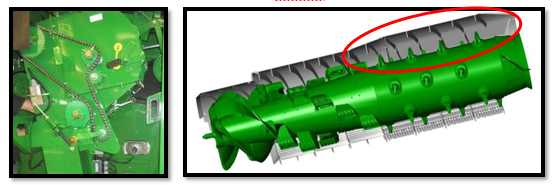
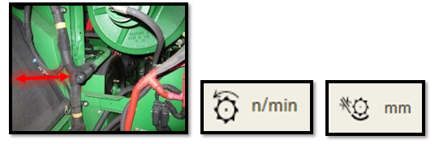

Réglage et inspection de la moissonneuse-batteuse
Hauteur du tambour et vitesse du convoyeur
- Position du tambour avant - Poignée vers le bas pour l'orge
- Vitesse du convoyeur – 32 dents pour les conditions de récolte d'orge normales et difficiles, 26 dents dans des conditions sèches.

Vitesse du tambour d‘alimentation
Vitesse rapide pour les conditions normales et difficiles. Dans des conditions sèches et cassantes, la vitesse peut être abaissée afin de limiter l'endommagement de la paille et de réduire la charge du caisson.

Contre-batteurs
Les contre-batteurs à petit fil nº 1 et à gros fil nº 2 sont recommandés pour les céréales et offrent les meilleures performances.
La configuration standard de la machine comporte un contre-batteur à petit fil à l'avant, un contre-batteur à petit fil au milieu et un contre-batteur à grand fil à l'arrière.
Dans des conditions de battage difficiles, le contre-batteur du milieu peut être remplacé par un contre-batteur à grand fil pour augmenter le battage.
Les contre-batteurs à mini barre ronde nº 3 doivent uniquement être utilisés dans des conditions difficiles lors de bourrages de contre-batteur, et lorsque les réglages machines ne suffisent plus.
Se reporter au livret d'entretien pour la procédure de mise à niveau et le calibrage à zéro des contre-batteurs (de l'avant à l'arrière), ainsi que pour l'écartement par rapport aux éléments de battage.

Plaques d'obturation du contre-batteur
Des plaques d'obturation de contre-batteur ne seront probablement pas nécessaires en raison des performances de battage élevées du contre-batteur à petit fil et du rotor.
S'ils s'avèrent nécessaires, ils doivent être posés dans l'ordre suivant en raison de la manière dont les retours des otons sont traités. Pour SX60 et SX70, positions 1, 4, 5, 2, 3. De SX80 à SX90, position 1, 2, 3, 4, 5.

Grilles de séparation
S'assurer que les entretoises de la grille de séparation nº 1 se trouvent sur le rail pour l'orge. Cela permettra d’avoir les grilles en position haute, afin d’assurer un flux constant de récolte via les organes de battage. Utiliser les couvercles de grille de séparation nº 2 uniquement lorsque la répartition au caisson de nettoyage est inégale. Ils permettent de réduire la quantité de matière sortant du rotor sur l'extérieur. Avant de les poser, tenter d'obtenir une répartition uniforme du caisson de nettoyage en réglant les diviseurs des vis d'alimentation.

Batteur d'otons et déflecteurs supérieurs réglables (suivant équipement)
Le contre-batteur du batteur d'otons doit être en position fermée (céréales). Si les céréales sont sujet à la “casse”, le contre-batteur peut également fonctionner en position ouverte (maïs).

Les déflecteurs supérieurs du rotor doivent être en position standard. En conditions très sèches ils peuvent être placés en position avancée pour améliorer la qualité de la paille et réduire la charge du caisson.
NDLR/BM: pas assez spécifique à l'équipement ou à la céréale, changer éléments non spécifiques ou rendre le tout plus général pour faire une doc pour l'ensemble
Plutôt partisane d'avoir doc spécifique à chaque céréale parce que plsu intéressant pour usager de pouvoir info pour son cas particulier
Réglages des organes de battage
Le rotor doit être réglé sur un régime rapide.
| Paramètre à régler | Réglage à effectuer | Conditions |
|---|---|---|
| Régime du rotor | 830 tr/min | Conditions sèches et cassantes |
| Régime du rotor | 930 tr/min | Conditions normales et difficiles |
| Écartement du contre-batteur | 25 mm | Conditions de battage sèches et faciles |
| Écartement du contre-batteur | 13 mm | Conditions normales et difficiles |
Ces recommandations de réglages constituent un point de départ et devront probablement être encore optimisées.

Composants du caisson de nettoyage
La grille à otons universelle nº 1 et la grille à grain universelle nº 3 sont couramment utilisées. Il est possible de poser une grille à otons hautes performances nº 2, qui permet d'obtenir un échantillon de trémie plus propre et une réduction de la charge d'otons lorsque que les performances sont limitées par le caisson de nettoyage

Les diviseurs des vis d'alimentation nº 1 doivent être réglés pour obtenir une répartition uniforme du caisson de nettoyage. Le relevage des tôles permet de réduire la quantité de matière à l'extérieur. Il est également possible de poser une pré-grille à otons réglable nº 2, qui empêche l'accumulation de tiges dans la grille, lors de la récolte de colza et de tournesol. La pré-grille à ôtons réglable n'offre aucun avantage pour l'orge. L'extension de pré-grille à otons nº 3, n'est pas livrée avec les machines ZX et ne doit pas être posée pour l'orge

Réglages du caisson de nettoyage
Ouverture de la grille à otons – 16 mm – Débit normal (SX70 à 6 t/ha)
Ouverture de la grille à otons – 18 mm – Débit élevé (SX90 à 8 t/ha)
L'ouverture de la grille à otons doit être supérieure de 2 mm en cas de pose
de la grille à otons hautes performances
Extension de la grille à otons – 5 mm – Sur terrain plat
Extension de la grille à otons – 10 mm – À flanc de coteau
Ouverture de la grille à grain – 6 mm – Débit normal (SX70 à 6 t/ha)
Ouverture de la grille à grain – 9 mm – Débit élevé (SX90 à 8 t/ha)
L'ouverture de la grille à grain doit être supérieure de 1 mm en cas de pose
de la grille à otons hautes performances
Régime du ventilateur – 950 tr/min - Débit normal (SX70 à 6 t/ha)
Régime du ventilateur – 1050 tr/min - Débit élevé (SX90 à 8 t/ha)
Le régime du ventilateur doit être supérieur de 100 tr/min avec une grille à
otons hautes performances
Suivant équipement, la pré-grille à otons réglable doit être réglée sur
l'ouverture maximale.

Transport du grain
Les couvercles de vis transversale doivent être en position relevée. Le déflecteur au niveau de la vis de remplissage de la trémie à grain peut être réglé pour modifier le chargement de la trémie à grain. La position illustrée permet de charger la trémie à grain plus à droite.

Composants du système de résidus
Les palettes incurvées nº 1 doivent être posées sur chaque deuxième segment de l’épandeur à disques Advanced PowerCast™. Le couvercle sous le tambour d'alimentation nº 2 ne doit pas être posé, car il peut entraîner un enroulement lors de la récolte de petites céréales. Un ralentisseur de chute nº 3 est disponible pour la configuration Premium afin d'améliorer la forme des andains et accélérer le séchage de la paille.

Réglages des résidus
Le régime du broyeur nº 1 doit être réglé sur élevé. Les contre-couteaux nº 2 doivent être enclenchés uniquement si nécessaire afin d'éviter toute consommation d'énergie inutile. Il est possible de poser une barre d'ancrage nº 3 sur le plancher du broyeur à coupe fine (44 couteaux) pour augmenter la qualité de broyage.

Le déflecteur de rafles nº 1 doit être en position relevée/céréales. Les ailettes du déflecteur arrière ou du volet de broyage/andainage nº 2 sont réglables afin d'améliorer la répartition des résidus.